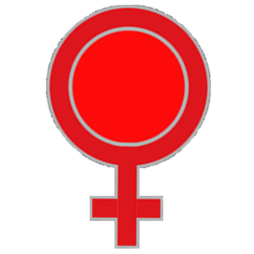

Inspirat din cea mai veche înțelepciune agrară — plantezi, aștepți, recoltezi — Vault for Universal Labor Value Abolishment transpune pe blockchain ceea ce bunicile știau deja: că valoarea nu se creează prin muncă forțată, ci prin răbdare, ciclu și natură.
Sânzienele și Blagoveștenia nu sunt date alese la întâmplare. Sunt cele mai importante două momente ale calendarului agrar românesc. PULA of Dracula nu inventează o religie. Citește în ea una mai veche decât toate celelalte.

Când P.U.L.A. intră în Vault for Universal Labor Value Abolishment, cele două simboluri se contopesc unul în celălalt. Din contopire se deschide Gateway for Universal Reproductive Asset — poarta prin care iese Living Instrument for Multiplied Birth Assets, pruncul digital al PULA. Nouă luni mai târziu, la Blagoveștenie, acesta se preface înapoi în PULA înmulțită.
1 SOL per tranzacție, trimis automat de smart contract într-un wallet public. Oricine poate verifica. Niciodată nu se retrage. SOL-ul rămâne acolo ca dovadă permanentă a participării.
Pot depune orice cantitate? Da. Jertfa de 1 SOL e per tranzacție, nu per PULA.
Pot intra de mai multe ori? Da, de câte ori vrei în perioada de deschidere.
E o garanție de profit? Nu. Ca orice crypto, există riscuri. Investești responsabil.
Poate fi auditat smart contractul? Da. Codul sursă va fi public înainte de lansare, pe GitHub.
Fii acolo pe 24 Iunie 2027. Sau nu fi.
Natura nu insistă.